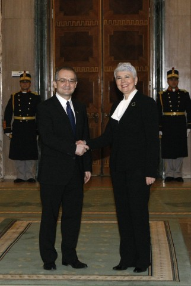

Primul-ministru Emil Boc a avut astăzi, la Palatul Victoria, convorbiri cu omologul său croat, Jadranka Kosor, care a efectuat o vizită de lucru în România.
 Principalele teme de discuție au vizat cooperarea economică și schimburile comerciale dintre România și Croația, aderarea Croației la Uniunea Europeană, strategia Dunării, precum și situația comunității istroromâne din Croația.
Premierul Emil Boc a asigurat Croația de tot sprijinul României în privința aderării sale la Uniunea Europeană, ca parte a politicii ușilor deschise promovate de UE. șeful Executivului român a declarat că „România sprijină ferm aderarea Croației la Uniunea Europeană. Ne dorim o vecinătate stabilă și prosperă iar aceste deziderate se pot realiza numai prin integrarea Balcanilor de Vest în structurile europene și euro-atlantice. Croația poate conta în continuare pe sprijinul României în procesul de aderare la Uniunea Europeană."
Premierul Jadranka Kosor a mulțumit Guvernului României pentru sprijinul acordat pe parcursul procesului de integrare în Uniunea Europeană și a exprimat dorința Croației de a încheia negocierile de aderare până la finalul mandatului președinției ungare a Consiliului Uniunii Europene. „Mulțumim pentru sprijinul consecvent pe care partea română l-a acordat Croației. /.../ Avem în continuare nevoie de sprijinul României, al domnului prim-ministru, având în vedere că dorința Croației este de a finaliza negocierile de intrare în Uniunea Europeană până la încheierea mandatului președinției ungare a Consiliului UE, la sfârșitul lunii iunie", a declarat Jadranka Kosor.
De asemenea, cei doi șefi de guvern au stabilit să colaboreze și în ceea ce privește absorbția fondurilor europene, dată fiind experiența României, care ar putea fi valorificată de Croația. „Suntem dispuși să împărtășim experiența României atât în ceea ce privește procesul de pre-aderare cât și în privința aspectelor de post aderare la Uniunea Europeană", a declarat premierul Emil Boc.
În cadrul convorbirilor de astăzi, primul-ministru Emil Boc a pledat pentru intensificarea cooperării economice și diversificarea schimburilor comerciale dintre România și Croația. Premierul român și-a exprimat convingerea că importurile și exporturile dintre cele două state se vor intensifica, și de asemenea, i-a propus omologului croat dezvoltarea de schimburi de bune practici în domeniul turismului, dat fiind potențialul turistic deosebit pe care ambele state îl dețin.
De asemenea, șeful Executivului român a declarat că în cadrul întâlnirii de astăzi cei doi premieri au fost de acord ca România și Croația să diversifice categoriile de produse care fac obiectul relațiilor de import-export în acest moment. „Ne-am stabilit astăzi ca obiectiv să diversificăm grupele de produse care fac obiectul importurilor și exporturilor reciproce" a afirmat primul-ministru Emil Boc în cadrul conferinței de presă de astăzi. „O linie aeriană directă București – Zagreb va impulsiona și mai mult atât schimburile comerciale, cât și activitatea turistică reciprocă dintre cele două țări", a susținut premierul român.
Premierul croat, Jadranka Kosor, a arătat în acest context că schimburile comerciale au crescut cu 8% în primele zece luni ale anului 2010, și a subliniat potențialul de colaborare care există între porturile românești și cele croate.
În ceea ce privește strategia Dunării, premierul Emil Boc a subliniat importanța unei abordări pragmatice și eficiente, orientate pe dezvoltarea de proiecte în beneficiul regiunii riverane.
Un alt subiect abordat în cadrul convorbirilor oficiale de astăzi a fost situația comunității istroromâne care locuiește pe teritoriul Croației. Premierul Emil Boc a cerut sprijinul omologului său croat în vederea protejării dialectului istroromân, considerat de UNESCO pe cale de dispariție. „Un sprijin din partea autorităților croate pentru conservarea acestui bun cultural comun este și va fi extrem de apreciat de către România", a apreciat primul-ministru Emil Boc în cadrul conferinței comune de presă.
Cu prilejul vizitei premierului croat, la Palatul Victoria, au fost semnate două memorandumuri de cooperare bilaterală în domeniul economic, respectiv al afacerilor externe.
Memorandumul de cooperare între Ministerul Economiei, Comerțului și Mediului de Afaceri român și Ministerul Economiei, Muncii și Antreprenoriatului din Croația a fost semnat de Ion Ariton, ministrul român al Economiei, Comerțului și Mediului de Afaceri, iar din partea Croației de Ðuro Popojac, ministrul Economiei, Muncii și Antreprenoriatului.
Protocolul de cooperare între Ministerul Afacerilor Externe din România și Ministerul Afacerilor Externe și Integrării Europene din Croația a fost semnat de Anton Niculescu, secretar de stat în Ministerul Afacerilor Externe român , iar din partea Croației de Andrej Plenkovic, secretar de stat pentru Integrare Europeană în Ministerul Afacerilor Externe.
January 28, 2011
© 2011 Guvernul României – Biroul de presă